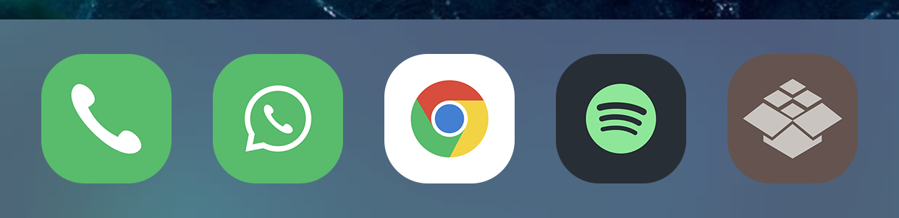

Compatible with iOS 11
Docker is the simplest tweak you never knew you needed. Simply swipe upwards on your dock to reveal an extra row of icons to store apps. Docker immediately doubles the usability and productivity of the dock, without adding complexity.
Compatible with most dock tweaks.
No options to configure.
This tweak is DRM-free and open source.
